Καθημερινά Εργαλεία — Artifacts, Αρχεία & Ανάλυση
Σε αυτή την ενότητα, θα εξοικειωθείτε με τα εργαλεία εκείνα που καθιστούν το Claude κάτι πολύ περισσότερο από έναν απλό ψηφιακό βοηθό. Στο τέλος της ενότητας, θα είστε σε θέση να παράγετε αληθινά παραδοτέα, όπως έγγραφα, αναλύσεις και συνόψεις. Με αυτόν τον τρόπο, θα μπορείτε να αντικαταστήσετε πολλά μικρά εργαλεία της καθημερινότητάς σας με ένα μόνο μέσο. Έτσι, θα αναβαθμίσετε ουσιαστικά την αποδοτικότητα της ροής εργασίας σας.
Μαθησιακοί στόχοι
- Να κατανοήσετε τι είναι τα Artifacts, πότε εμφανίζονται και πώς τα διαχειρίζεστε και τα επεξεργάζεστε.
- Να αναλύετε αρχεία PDF, Word, Excel/CSV και εικόνες, και να συγκρίνετε πολλαπλά αρχεία μεταξύ τους.
- Να επιλέγετε σωστά ανάμεσα σε Web Search και Research Mode και να αξιολογείτε κριτικά πηγές και αποτελέσματα.
- Να δημιουργείτε έτοιμα αρχεία Office (Word, Excel, PowerPoint, PDF) απευθείας από το Claude.
- Να αξιοποιείτε το Code Execution & File Creation για καθαρισμό δεδομένων, υπολογισμούς και γραφήματα — χωρίς γνώσεις προγραμματισμού.
- Να εφαρμόζετε το Claude σε 5 ρεαλιστικά σενάρια καθημερινότητας: email, συνόψεις, μεταφράσεις, brainstorming και παρουσιάσεις.
Artifacts — τι είναι και πότε εμφανίζονται
Τα Artifacts στο Claude δεν είναι απλώς ένα ακόμη εργαλείο. Είναι η δυνατότητα που έχετε να δημιουργείτε και να προβάλλετε αυτόνομο περιεχόμενο απευθείας μέσα στη συνομιλία σας, σε ένα ειδικό «παράθυρο» που ανοίγει δίπλα στο chat. Φανταστείτε το σαν έναν προσωπικό χώρο εργασίας, όπου το περιεχόμενο αποκτά τη δική του ανεξάρτητη υπόσταση.
Τι μπορείτε να δημιουργήσετε
Οι δυνατότητες είναι ουσιαστικά απεριόριστες, ανάλογα με τις ανάγκες σας. Μπορείτε να διαχειριστείτε:
Κώδικα και Εφαρμογές
Από διαδραστικές εφαρμογές HTML, CSS και JavaScript, μέχρι πολύπλοκα React components, υπολογιστικά εργαλεία, ακόμα και ολοκληρωμένα dashboards.
Έγγραφα
Μεγάλα κείμενα, ολοκληρωμένα άρθρα ή επαγγελματικές αναφορές που χρειάζονται καθαρή δομή και μορφοποίηση Markdown.
Οπτικά στοιχεία
Σχεδιαστικά γραφικά SVG ή διαγράμματα ροής, που αποσαφηνίζουν σύνθετες έννοιες με μια ματιά.
Πότε επιλέγει το Claude να δημιουργήσει ένα Artifact
Το Claude διαθέτει έναν δικό του μηχανισμό «κρίσης» για το πότε μια πληροφορία πρέπει να απομονωθεί. Θα δείτε ένα Artifact να εμφανίζεται όταν το περιεχόμενο πληροί ορισμένες προϋποθέσεις:
Γιατί να τα χρησιμοποιείτε
Τα πλεονεκτήματα στην καθημερινή σας εργασία είναι άμεσα και απτά. Αρχικά, η δυνατότητα επεξεργασίας σε πραγματικό χρόνο σάς επιτρέπει να βλέπετε τις αλλαγές σας να συμβαίνουν μπροστά στα μάτια σας. Επιπλέον, τα διαδραστικά artifacts εκτελούνται απευθείας μέσα στον browser σας, εξοικονομώντας σας πολύτιμο χρόνο.
Το σημαντικότερο, βέβαια, είναι ότι τα αρχεία αυτά παραμένουν ξεχωριστά από τη ροή της συνομιλίας. Μπορείτε να τα κατεβάσετε ανά πάσα στιγμή, έχοντας πάντα στα χέρια σας ένα καθαρό και έτοιμο προς χρήση παραδοτέο, χωρίς να ψάχνετε σε χιλιάδες μηνύματα για να βρείτε εκείνη τη μία γραμμή κώδικα που χρειαζόσασταν.
Βίντεο: Δημιουργία εφαρμογών με Claude Artifacts
Δημιουργία εφαρμογών με Claude Artifacts
Δείτε στην πράξη πώς το Claude δημιουργεί ένα αυτόνομο Artifact μέσα στη συνομιλία και πώς μια απλή οδηγία μετατρέπεται σε λειτουργική εφαρμογή.
Τι να προσέξετε: πότε «αποφασίζει» το Claude να ανοίξει το ξεχωριστό παράθυρο του Artifact και πώς το περιεχόμενο παραμένει ανεξάρτητο από τη ροή της συνομιλίας.
Γρήγορος έλεγχος
Ποια από τις παρακάτω προϋποθέσεις οδηγεί το Claude να δημιουργήσει ένα Artifact;
Παραδείγματα Artifacts
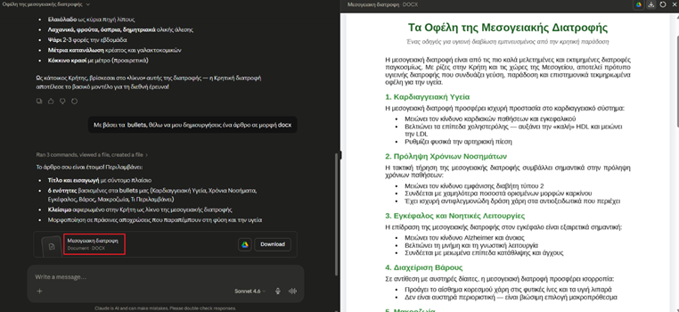
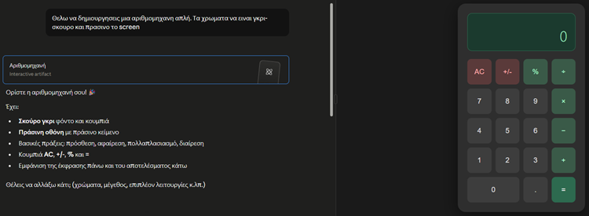
Βίντεο: Δημιουργία αριθμομηχανής με Claude Artifacts
Δημιουργία αριθμομηχανής με Claude Artifacts
Ένα πλήρες παράδειγμα διαδραστικού Artifact: από το prompt μέχρι τη λειτουργική αριθμομηχανή που εκτελείται απευθείας στον browser σας.
Τι να προσέξετε: πώς το διαδραστικό Artifact «τρέχει» μέσα στο παράθυρο προεπισκόπησης και πώς μπορείτε να ζητήσετε αλλαγές με απλή, καθημερινή γλώσσα.
Αναστοχασμός
💭 Σκεφτείτε: ποιο μικρό εργαλείο της δικής σας καθημερινότητας (π.χ. έναν υπολογισμό που κάνετε συχνά, μια φόρμα, έναν πίνακα) θα μπορούσατε να ζητήσετε από το Claude ως διαδραστικό Artifact; Πώς θα διατυπώνατε το πρώτο σας prompt;
Διαχείριση και Επεξεργασία ενός Artifact
Η πραγματική δύναμη των Artifacts κρύβεται στην ευελιξία τους. Δεν πρόκειται για στατικά αρχεία, αλλά για δυναμικά περιβάλλοντα εργασίας. Όταν εμφανιστεί ένα Artifact στην οθόνη σας, δεν είστε υποχρεωμένοι να το αποδεχτείτε ως έχει. Μπορείτε να παρέμβετε, να διορθώσετε και να διαμορφώσετε το περιεχόμενό του με δύο διαφορετικούς τρόπους, ανάλογα με το τι σας εξυπηρετεί καλύτερα εκείνη τη στιγμή.
1. Επεξεργασία μέσω του Claude
Αυτός είναι ο πιο φυσικός και αποδοτικός τρόπος εργασίας. Αντί να ψάχνετε γραμμές κώδικα ή να ξαναγράφετε παραγράφους, αφήνετε το μοντέλο να κάνει τη βαριά δουλειά για εσάς. Απλώς ζητάτε τις αλλαγές που επιθυμείτε απευθείας μέσα στο chat, χρησιμοποιώντας απλή, καθημερινή γλώσσα.
Οι οδηγίες σας μπορεί να είναι όσο συγκεκριμένες ή όσο γενικές θέλετε. Για παράδειγμα, μπορείτε να του ζητήσετε:
«Κάνε το άρθρο πιο σύντομο και περιεκτικό, αφαιρώντας τις επαναλήψεις.»
«Άλλαξε το χρώμα του κεντρικού κουμπιού σε μπλε και μεγάλωσε τη γραμματοσειρά.»
«Πρόσθεσε μια νέα παράγραφο στο τέλος που να αναλύει τα πλεονεκτήματα της μεθόδου.»
Το Claude θα επεξεργαστεί το αίτημά σας και θα ενημερώσει το Artifact σε δευτερόλεπτα. Το πιο σημαντικό; Το ιστορικό των αλλαγών διατηρείται, επιτρέποντάς σας να παρακολουθείτε την εξέλιξη του αρχείου σας.
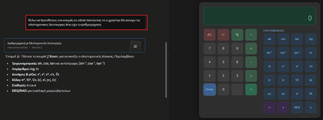
2. Χειροκίνητη Επεξεργασία
Ωστόσο, υπάρχουν περιπτώσεις που μια μικρή, άμεση διόρθωση είναι πιο γρήγορη χειροκίνητα, από το να τη ζητήσετε εκ νέου μέσω κειμένου από το μοντέλο. Ο τρόπος που θα ενεργήσετε εδώ εξαρτάται αποκλειστικά από το είδος του αρχείου που περιέχει το Artifact.
Στην περίπτωση που το Claude έχει δημιουργήσει ένα αρχείο κειμένου (π.χ. .docx) μέσω εκτέλεσης κώδικα (code execution), αυτό δεν είναι διαθέσιμο για άμεση επεξεργασία κειμένου μέσα στο παράθυρο του Artifact. Οι επιλογές είναι είτε να κατεβάσετε το αρχείο τοπικά στον υπολογιστή σας και να το επεξεργαστείτε, είτε να επιλέξετε το κουμπί Google Drive, όπου τότε το αρχείο θα ανοίξει μέσω του Google Drive για να το επεξεργαστείτε.
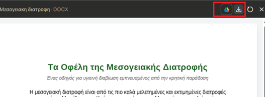
Project με κώδικα: προβολή UI και πηγαίου κώδικα
Στην περίπτωση όμως που έχετε δημιουργήσει κάποιο project με κώδικα, τότε μπορείτε μέσα από το Artifact να δείτε και να επεξεργαστείτε εν μέρει τον κώδικα.
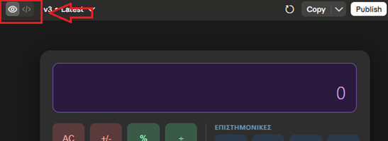
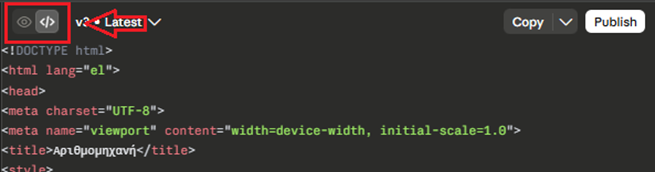
Επιλογές επεξεργασίας κώδικα
Για την επεξεργασία του κώδικα οι επιλογές ωστόσο είναι συγκεκριμένες:
- explain Το Claude αναλύει τον κώδικα που επιλέξατε.
- improve Δίνετε την οδηγία στο μοντέλο να αναδιαμορφώσει ή να διορθώσει το επιλεγμένο σημείο.
Βεβαίως, μπορείτε πάντα να κατεβάσετε το αρχείο ή να αντιγράψετε τον κώδικα που δίνει το Claude, τοπικά στον υπολογιστή σας.
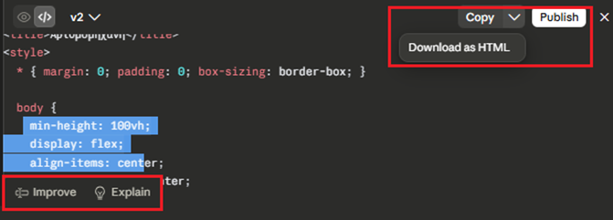
Δημοσίευση ενός Artifact (Publish)
Όταν το Artifact φτάσει στην τελική του μορφή και είστε απόλυτα ικανοποιημένοι με το αποτέλεσμα, το Claude σάς δίνει τη δυνατότητα να το μοιραστείτε με εξωτερικούς συνεργάτες ή πελάτες μέσω της επιλογής Publish (Δημοσίευση), η οποία βρίσκεται στο πάνω δεξί μέρος του παραθύρου.
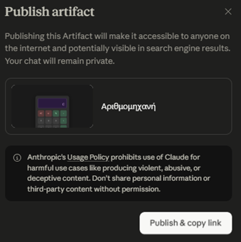
Βίντεο: Χρήση του Claude Artifacts Panel
Χρήση του Claude Artifacts Panel
Το βίντεο σας ξεναγεί στο παράθυρο (panel) των Artifacts: εναλλαγή προεπισκόπησης/κώδικα, στοχευμένη επεξεργασία και επιλογές αντιγραφής, λήψης και δημοσίευσης.
Τι να προσέξετε: τα εικονίδια εναλλαγής UI/κώδικα, τις επιλογές explain και improve, καθώς και το κουμπί Publish για κοινοποίηση του τελικού αποτελέσματος.
Γρήγορος έλεγχος
Πού βρίσκεται και τι κάνει η επιλογή «Publish» ενός Artifact;
Δουλεύοντας με αρχεία
Το Claude δεν περιορίζεται μόνο στην επεξεργασία του κειμένου που πληκτρολογείτε. Διαθέτει μια πανίσχυρη λειτουργία αναγνώρισης και ανάλυσης εξωτερικών εγγράφων, μετατρέποντας τη συνομιλία σας σε έναν ζωντανό σταθμό επεξεργασίας δεδομένων.
Η επεξεργασία αρχείων PDF
Τα έγγραφα PDF αποτελούν το παγκόσμιο πρότυπο για αναφορές, μελέτες, ακαδημαϊκά άρθρα και δημόσια έγγραφα. Συχνά όμως, ο όγκος τους είναι αποθαρρυντικός. Το Claude μπορεί να διαβάσει, να κατανοήσει και να αναλύσει αρχεία PDF σε δευτερόλεπτα, προσφέροντάς σας μια σειρά από πολύτιμες δυνατότητες.
Δυναμική Σύνοψη (Summarization): Αντί απλά να διαβάζει εκατοντάδες σελίδες, μπορείτε να του ζητήσετε να εξαγάγει τα βασικά συμπεράσματα, τις κεντρικές ιδέες ή τις αποφάσεις μιας πολυσέλιδης αναφοράς. Η σύνοψη μπορεί να γίνει σε μορφή παραγράφων ή δομημένων bullet points για μεγαλύτερη ευκολία.
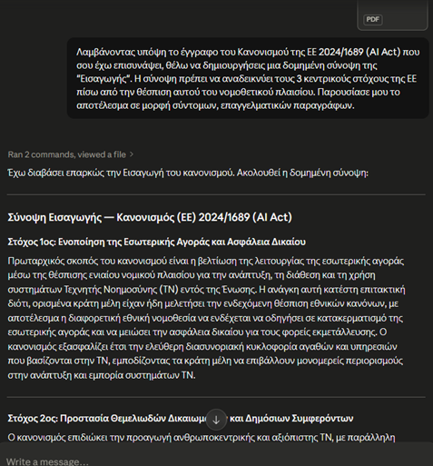
Στοχευμένη Αναζήτηση Πληροφοριών: Μπορείτε να κάνετε ερωτήσεις απευθείας πάνω στο έγγραφο. Για παράδειγμα: «Με βάση το PDF που ανέβασα, ποιες είναι οι υποχρεώσεις του αναδόχου που αναφέρονται στη σελίδα 14;». Το μοντέλο θα εντοπίσει την πληροφορία και θα σας απαντήσει με ακρίβεια.
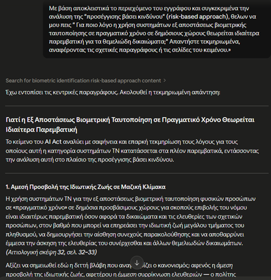
- Μετάφραση και ορολογία: Εάν έχετε ένα ξενόγλωσσο τεχνικό κείμενο ή μια επιστημονική μελέτη, μπορείτε να ζητήσετε τη μετάφρασή του στα Ελληνικά, διατηρώντας μάλιστα την επίσημη και εξειδικευμένη ορολογία του κλάδου σας.
- Εξαγωγή δομημένων δεδομένων: Το Claude μπορεί να εντοπίσει διάσπαρτα στοιχεία, ημερομηνίες ή ονόματα μέσα στο κείμενο του PDF και να τα οργανώσει σε έναν καθαρό, δομημένο πίνακα, έτοιμο προς χρήση.
Συμβουλή: Όταν εργάζεστε με PDF, η σαφήνεια του prompt καθορίζει την ποιότητα του αποτελέσματος. Αντί για ένα γενικό «Κάνε μου μια σύνοψη», προτιμήστε οδηγίες όπως: «Κάνε μια σύνοψη των 5 κυριότερων κινδύνων που περιγράφονται στο έγγραφο, εστιάζοντας στις οικονομικές επιπτώσεις».
Γρήγορος έλεγχος
Θέλετε την καλύτερη δυνατή σύνοψη ενός PDF. Ποιο prompt συνιστά η ενότητα;
Η επεξεργασία αρχείων Word
Αν τα αρχεία PDF αποτελούν τον ιδανικό τύπο για ανάγνωση και άντληση πληροφοριών, τα αρχεία Word είναι ο απόλυτος σύμμαχος στην παραγωγή και την τροποποίηση περιεχομένου. Το Claude μπορεί να επεξεργαστεί αρχεία .docx, επιτρέποντάς σας να παρακάμψετε τη χρονοβόρα διαδικασία της χειροκίνητης αναδιατύπωσης.
Ανεβάζοντας ένα αρχείο Word στη συνομιλία, μπορείτε να εκτελέσετε άμεσα τις εξής εργασίες:
Αλλαγή ύφους και μορφοποίησης: Μπορείτε να εισαγάγετε ένα προσχέδιο κειμένου και να ζητήσετε από το μοντέλο να το μετατρέψει. Για παράδειγμα ένα απλό κείμενο μπορεί να μεταμορφωθεί σε μια επίσημη εταιρική αναφορά, σε ένα ακαδημαϊκό δοκίμιο ή σε ένα τεχνικό εγχειρίδιο.
Παράδειγμα: πριν και μετά το prompt
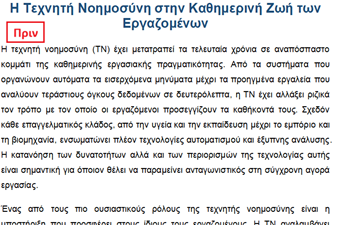
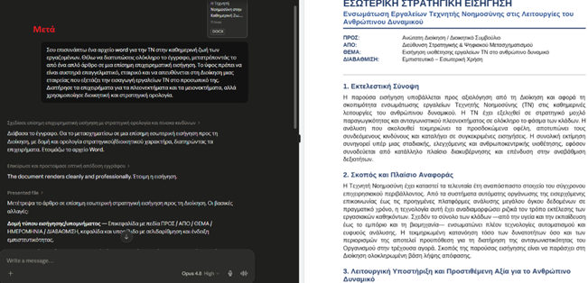
Διόρθωση και Επιμέλεια Κειμένου (Proof reading): Το Claude εντοπίζει γραμματικά, συντακτικά ή ορθογραφικά λάθη. Παράλληλα, μπορεί να βελτιώσει τη ροή του λόγου, κάνοντας το κείμενο πιο συμπαγές και επαγγελματικό, χωρίς να αλλοιώσει το αρχικό νόημα.
Αναδιάρθρωση Εγγράφου: Εάν ένα έγγραφο στερείται δομής, μπορείτε να δώσετε οδηγία στο μοντέλο να προσθέσει κατάλληλες επικεφαλίδες (headings), να χωρίσει το κείμενο σε λογικές παραγράφους ή να μετατρέψει χαοτικές σημειώσεις σε οργανωμένα bullet points.
Εμπλουτισμός Περιεχομένου: Έχοντας ως βάση το έγγραφό σας, μπορείτε να ζητήσετε από το Claude να επεκτείνει συγκεκριμένες ενότητες, να προσθέσει επιχειρήματα ή να δημιουργήσει μια εισαγωγή και έναν επίλογο που ταιριάζουν με το υπόλοιπο περιεχόμενο.
Συμβουλή: Όταν θέλετε να αναδιαμορφώσετε ένα αρχείο Word, είναι χρήσιμο να καθορίζετε εκ των προτέρων το κοινό στο οποίο απευθύνεται το κείμενο. Ένα prompt της μορφής: «Αναδιατύπωσε το επισυναπτόμενο έγγραφο ώστε το ύφος του να είναι αυστηρά επαγγελματικό και κατάλληλο για παρουσίαση σε διοικητικό συμβούλιο», θα δώσει ένα πολύ πιο στοχευμένο αποτέλεσμα.
Η ανάλυση αρχείων Excel και δεδομένων (.xlsx / .csv)
Αν η επεξεργασία κειμένων Word προσφέρει δημιουργική ελευθερία, η διαχείριση αρχείων Excel με το Claude προσφέρει καθαρή υπολογιστική ισχύ. Το μοντέλο μπορεί να επεξεργαστεί υπολογιστικά φύλλα και αρχεία δεδομένων, επιτρέποντάς σας να παρακάμψετε τις περίπλοκες συναρτήσεις.
Ανεβάζοντας ένα αρχείο Excel στη συνομιλία, μπορείτε να εκτελέσετε άμεσα τις εξής προηγμένες εργασίες:
Στατιστική ανάλυση και συμπεράσματα
Το Claude μπορεί να διαβάσει χιλιάδες γραμμές δεδομένων και να εντοπίσει τάσεις, κορυφαία προϊόντα σε πωλήσεις ή περιφέρειες με τη μεγαλύτερη κερδοφορία.
Υπολογισμός Δεικτών και KPIs
Μπορείτε να ζητήσετε μαθηματικούς υπολογισμούς (όπως αθροίσματα, μέσους όρους ή ποσοστά κέρδους) χωρίς να γράψετε ούτε έναν τύπο στο Excel.
Δημιουργία συγκεντρωτικών αναφορών (Reporting)
Το μοντέλο μπορεί να ομαδοποιήσει χαοτικά δεδομένα και να σας παραδώσει μια καθαρή, δομημένη σύνοψη των αποτελεσμάτων.
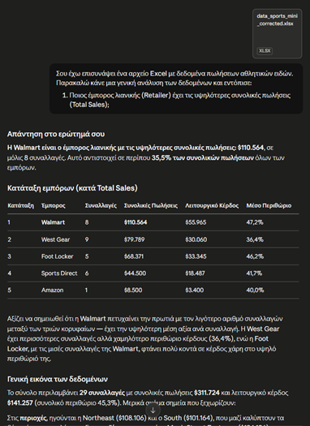
Συμβουλή: Όταν εργάζεστε με μεγάλα αρχεία δεδομένων, ζητάτε από το Claude να σας παρουσιάζει τα αποτελέσματα σε φθίνουσα σειρά (από το μεγαλύτερο στο μικρότερο) ή σε μορφή καθαρών πινάκων Markdown, ώστε η πληροφορία να είναι άμεσα αξιοποιήσιμη.
Βίντεο: Εργασία με Excel μέσω Claude Artifacts
Εργασία με Excel μέσω Claude Artifacts
Δείτε πώς το Claude αναλαμβάνει ένα υπολογιστικό φύλλο Excel: ανάλυση δεδομένων, υπολογισμοί και παρουσίαση αποτελεσμάτων σε δομημένη μορφή.
Τι να προσέξετε: πώς διατυπώνεται το prompt για την ανάλυση, πώς παρουσιάζονται τα αποτελέσματα σε πίνακες και πώς αποφεύγετε τις περίπλοκες συναρτήσεις του Excel.
Γρήγορος έλεγχος
Ανεβάζετε ένα Excel με χιλιάδες γραμμές πωλήσεων. Ποια είναι η σωστή προσέγγιση για να βρείτε τα κορυφαία προϊόντα;
Η επεξεργασία και ανάλυση εικόνων
Το Claude μπορεί να επεξεργαστεί αρχεία εικόνας (όπως .png, .jpg, .jpeg), επιτρέποντάς σας να εξάγετε πληροφορίες από οπτικό υλικό. Η λειτουργία αυτή είναι ιδιαίτερα χρήσιμη όταν θέλετε να μετατρέψετε στατικά δεδομένα σε επεξεργάσιμο κείμενο.
Ανεβάζοντας μια εικόνα στη συνομιλία, μπορείτε να εκτελέσετε άμεσα τις εξής εργασίες:
Ψηφιοποίηση κειμένου (OCR): Εάν ανεβάσετε τη φωτογραφία ενός εγγράφου ή ένα screenshot, το Claude αναγνωρίζει και εξάγει τους χαρακτήρες. Έτσι, αποκτάτε το κείμενο σε ψηφιακή μορφή χωρίς να χρειάζεται να το πληκτρολογήσετε από την αρχή.
Παράδειγμα OCR: από την απόδειξη στον πίνακα
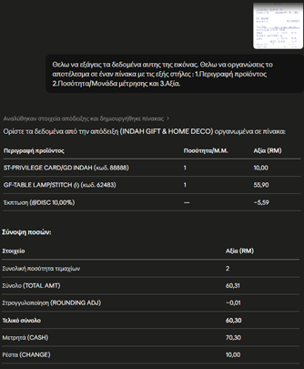
Ανάγνωση διαγραμμάτων: Μπορείτε να εισαγάγετε διαγράμματα ροής, οργανογράμματα ή τεχνικά σχέδια. Το μοντέλο αναλύει τη δομή τους και σας περιγράφει γραπτώς τα βήματα ή τις σχέσεις μεταξύ των στοιχείων.
Αξιολόγηση διεπαφών (UI/UX): Ανεβάζοντας το screenshot μιας ιστοσελίδας ή μιας εφαρμογής, μπορείτε να ζητήσετε παρατηρήσεις για τη χρηστικότητα. Το Claude εντοπίζει τη διάταξη των στοιχείων και προτείνει συγκεκριμένες σχεδιαστικές βελτιώσεις.
Παραγωγή κώδικα από προσχέδιο: Μπορείτε να σχεδιάσετε σε χαρτί το mockup μιας απλής ιστοσελίδας και να το φωτογραφήσετε. Ζητώντας από το Claude να το αναπαράγει, εκείνο θα δημιουργήσει τον αντίστοιχο κώδικα HTML/CSS σε ένα Artifact.
Επαγγελματική Συμβουλή: Για να έχει η αναγνώριση την καλύτερη δυνατή ακρίβεια, φροντίστε οι εικόνες ή τα screenshots να έχουν καλό φωτισμό, καθαρή εστίαση και ευανάγνωστους χαρακτήρες.
Βίντεο: Δημιουργία διαδραστικού quiz εικόνας
Δημιουργία διαδραστικού quiz εικόνας με Claude Artifacts
Ένα πρακτικό παράδειγμα που συνδυάζει την ανάλυση εικόνας με τη δύναμη των Artifacts: το Claude «διαβάζει» οπτικό υλικό και το μετατρέπει σε διαδραστικό quiz.
Τι να προσέξετε: πώς το Claude αντλεί πληροφορία από την εικόνα και πώς το αποτέλεσμα παραδίδεται ως διαδραστικό Artifact, έτοιμο για χρήση.
Αναστοχασμός
💭 Σκεφτείτε: ποιο έντυπο ή οπτικό υλικό της δουλειάς σας (αποδείξεις, χειρόγραφες σημειώσεις, διαγράμματα, screenshots) θα σας γλίτωνε τον περισσότερο χρόνο αν το ψηφιοποιούσατε ή το αναλύατε με το Claude; Τι θα του ζητούσατε να κάνει με τα δεδομένα που θα εξαγάγει;
Σύγκριση μεταξύ πολλαπλών αρχείων
Η ανάγκη για παράλληλη μελέτη εγγράφων παρουσιάζεται συχνά στην καθημερινή εργασία, είτε πρόκειται για διαφορετικές εκδόσεις του ίδιου αρχείου είτε για αναφορές διαφορετικών περιόδων. Το Claude σάς επιτρέπει να ανεβάσετε περισσότερα από ένα αρχεία ταυτόχρονα στη συνομιλία (π.χ. δύο PDF, ένα Excel και ένα Word), διευκολύνοντας τη μεταξύ τους διασταύρωση.
Αυτή η δυνατότητα είναι ιδιαίτερα χρήσιμη για τις ακόλουθες εργασίες:
Εντοπισμός αλλαγών (Version Control)
Ανεβάζοντας δύο διαφορετικές εκδόσεις ενός συμβολαίου, μιας τεχνικής πρότασης ή ενός κανονισμού, μπορείτε να ζητήσετε από το μοντέλο να εντοπίσει τις προσθήκες, τις διαγραφές ή τις τροποποιήσεις που έγιναν στο νεότερο έγγραφο.
Σύγκριση οικονομικών ή στατιστικών δεδομένων
Μπορείτε να εισαγάγετε δύο υπολογιστικά φύλλα Excel (π.χ. πωλήσεις του Έτους Α και του Έτους Β) και να ζητήσετε μια αναφορά μεταβολών. Το Claude θα υπολογίσει τις διαφορές και θα αναδείξει τις αυξήσεις ή τις μειώσεις ανά κατηγορία.
Διασταύρωση πηγών (Cross-referencing)
Όταν μελετάτε ένα θέμα από διαφορετικές πλευρές, μπορείτε να ανεβάσετε δύο ή τρία ακαδημαϊκά άρθρα ή εταιρικές εκθέσεις. Το μοντέλο μπορεί να συνθέσει τα κοινά τους σημεία, αλλά και να επισημάνει τις περιπτώσεις όπου οι απόψεις ή τα δεδομένα των συγγραφέων έρχονται σε αντίθεση.
Συμβουλή: Για να είναι η σύγκριση απόλυτα ξεκάθαρη, ζητάτε πάντα από το Claude να οργανώνει τα ευρήματα σε συγκριτικούς πίνακες. Ορισμένα πεδία που βοηθούν στη δομή είναι: «Σημείο Σύγκρισης», «Αρχείο 1», «Αρχείο 2» και «Παρατηρήσεις/Μεταβολή».
Web Search & Research Mode
Η τεχνητή νοημοσύνη δεν περιορίζεται μόνο στις γνώσεις με τις οποίες εκπαιδεύτηκε. Το Claude έχει τη δυνατότητα να συνδέεται με το διαδίκτυο για να αναζητά επίκαιρες πληροφορίες, γεγονότα της επικαιρότητας ή εξειδικευμένες πηγές. Για να διαχειριστείτε αποτελεσματικά αυτή τη ροή πληροφοριών, το μοντέλο σάς παρέχει δύο διακριτά εργαλεία: την Απλή Web Αναζήτηση (Web Search) και την Ενδελεχή Έρευνα (Research Mode).
Η σωστή επιλογή ανάμεσα σε αυτές τις δύο επιλογές, εξαρτάται από το είδος και το βάθος της πληροφορίας που χρειάζεστε κάθε φορά.
1. Απλή Web αναζήτηση (Web Search)
Η απλή αναζήτηση λειτουργεί ως ένας γρήγορος ψηφιακός βοηθός επικαιρότητας. Ενεργοποιείται αυτόματα ή κατ' επιλογή όταν το ερώτημά σας απαιτεί πρόσβαση σε τρέχοντα ή μεταβαλλόμενα δεδομένα.
Πότε την χρειάζεστε: Όταν αναζητάτε συγκεκριμένα, άμεσα γεγονότα, στατιστικά στοιχεία, πρόσφατες ειδήσεις ή απλές πληροφορίες που δεν απαιτούν βαθύτερη ανάλυση.
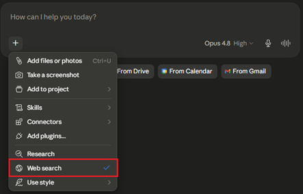
Τρόπος λειτουργίας: Το Claude εκτελεί μια γρήγορη σάρωση των κορυφαίων αποτελεσμάτων στις μηχανές αναζήτησης, εντοπίζει την απάντηση, σας την παρουσιάζει συνοπτικά και παραθέτει τους σχετικούς συνδέσμους (links) ως πηγές.
«Ποιες είναι οι τελευταίες αλλαγές που ανακοινώθηκαν αυτή την εβδομάδα για τη φορολογία των ελεύθερων επαγγελματιών;»
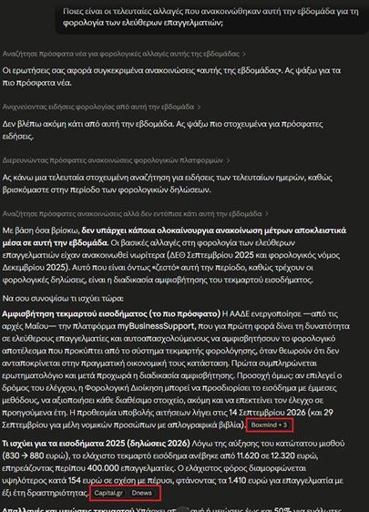
2. Ενδελεχής έρευνα (Research Mode)
Το Research Mode μετατρέπει το μοντέλο σε έναν αυτόνομο ερευνητή. Δεν κάνει απλώς μια επιφανειακή αναζήτηση, αλλά εκτελεί πολλαπλούς κύκλους αναζητήσεων, διασταυρώνει πηγές και συνθέτει δομημένες αναφορές.
Πότε την χρειάζεστε: Όταν το θέμα σας είναι σύνθετο, απαιτεί επιστημονική τεκμηρίωση, σύγκριση διαφορετικών απόψεων, ανάλυση αγοράς ή βιβλιογραφική επισκόπηση.
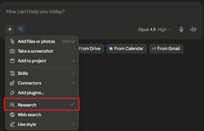
Τρόπος λειτουργίας: Το Claude διαβάζει τα πρώτα αποτελέσματα, εντοπίζει νέες λέξεις-κλειδιά, πραγματοποιεί νέες (υπο)αναζητήσεις για να καλύψει τα κενά, απορρίπτει αναξιόπιστες πηγές και τελικά συνθέτει μια εκτενή, πολυεπίπεδη αναφορά με ενσωματωμένες παραπομπές.
«Πραγματοποιήστε μια ολοκληρωμένη έρευνα για την εξέλιξη των ψηφιακών βοηθών (chatbots) στην τοπική αυτοδιοίκηση στην Ευρώπη τα τελευταία τρία χρόνια. Αναλύστε τις βέλτιστες πρακτικές και τις προκλήσεις υλοποίησης.»
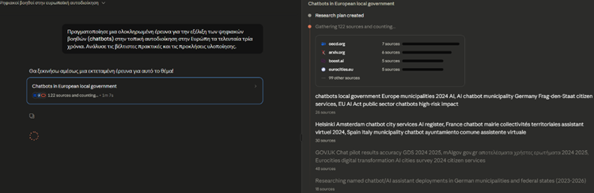
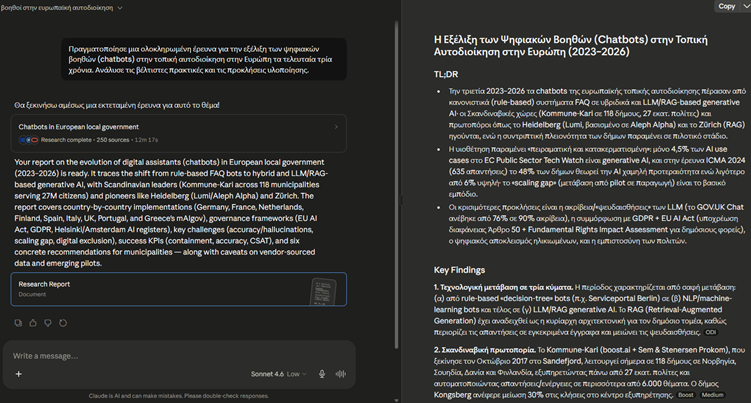
Δραστηριότητα: ποιο εργαλείο;
Ποιο εργαλείο θα επιλέγατε σε κάθε σενάριο;
«Ποια είναι η σημερινή ισοτιμία ευρώ/δολαρίου και τα πρόσφατα στατιστικά ανεργίας;» →
«Βιβλιογραφική επισκόπηση για την εξέλιξη των chatbots στην τοπική αυτοδιοίκηση, με σύγκριση απόψεων και βέλτιστες πρακτικές» →
«Ποιες αλλαγές ανακοινώθηκαν αυτή την εβδομάδα για τη φορολογία των ελεύθερων επαγγελματιών;» →
«Ολοκληρωμένη ανάλυση αγοράς με διασταύρωση πηγών και δομημένη αναφορά με παραπομπές» →
Κριτική αξιολόγηση πηγών και αποτελεσμάτων
Η δυνατότητα του Claude να αντλεί δεδομένα από το διαδίκτυο αυξάνει κατακόρυφα την παραγωγικότητα, αλλά παράλληλα απαιτεί από τον χρήστη την άσκηση κριτικής αξιολόγησης. Η τεχνητή νοημοσύνη επεξεργάζεται τις πληροφορίες που βρίσκει διαθέσιμες, πράγμα που σημαίνει ότι η ποιότητα της απάντησης εξαρτάται άμεσα από την ποιότητα των πηγών της.
Για να διασφαλίσετε την εγκυρότητα της έρευνάς σας, είναι απαράδεκτο να υιοθετείτε τυφλά κάθε αποτέλεσμα. Αντίθετα, προτείνεται να ακολουθείτε τα παρακάτω βήματα ελέγχου:
Έλεγχος της αξιοπιστίας του Domain: Πατώντας πάνω στις αριθμημένες παραπομπές ή ανοίγοντας το παράθυρο των πηγών (Sources), εξετάστε τους ιστοτόπους που επισκέφθηκε το μοντέλο. Προέρχονται οι πληροφορίες από επίσημους κυβερνητικούς φορείς (π.χ. .gov, europa.eu), θεσμοθετημένα ειδησεογραφικά δίκτυα, ακαδημαϊκά ιδρύματα ή από ανώνυμα blogs και φόρουμ;
Διασταύρωση ημερομηνιών: Σε κλάδους που μεταβάλλονται ραγδαία, όπως η τεχνολογία, η νομοθεσία ή η οικονομία, η πληροφορία χάνει γρήγορα την αξία της. Ελέγξτε αν οι πηγές που χρησιμοποιήθηκαν είναι πρόσφατες και επίκαιρες ή αν βασίζονται σε δεδομένα παλαιότερων ετών.
Εντοπισμός πιθανών αποκλίσεων (Hallucinations): Παρόλο που η σύνδεση στο διαδίκτυο μειώνει σημαντικά τις πιθανότητες «παραισθήσεων» (hallucinations) του μοντέλου, υπάρχει πάντα η πιθανότητα παρερμηνείας ενός σύνθετου κειμένου. Αν ένα στατιστικό στοιχείο ή μια νομική διάταξη σας φαίνεται υπερβολική ή ασυνήθιστη, χρησιμοποιήστε τον σύνδεσμο για να διαβάσετε το πρωτότυπο κείμενο στο σημείο της αναφοράς.
Αναγνώριση Μεροληψίας (Bias): Το Claude παρουσιάζει τη σύνθεση των απόψεων που εντοπίζει. Εάν το θέμα της αναζήτησής σας είναι αμφιλεγόμενο, ελέγξτε αν η απάντηση περιλαμβάνει σφαιρική προσέγγιση ή αν έχει βασιστεί μονόπλευρα σε πηγές που υποστηρίζουν μόνο μία συγκεκριμένη κατεύθυνση.
Η αναζήτηση και η έρευνα μέσω του Claude δεν αντικαθιστούν τον ανθρώπινο έλεγχο. Λειτουργούν ως το εργαλείο που θα κάνει το 90% της προεργασίας (συλλογή, μετάφραση, σύνοψη), αφήνοντας σε εσάς το κρίσιμο 10% της τελικής επαλήθευσης και έγκρισης.
Δημιουργία εγγράφων Office
Η εξέλιξη του Claude επιτρέπει πλέον την απευθείας παραγωγή αρχείων που μπορείτε να κατεβάσετε και να χρησιμοποιήσετε άμεσα στην εργασία σας. Μέσω αυτής της λειτουργίας, το Claude έχει την δυνατότητα να δημιουργήσει έγγραφα με την πλήρη μορφοποίηση που απαιτείται από τα επαγγελματικά πρότυπα. Αυτή η δυνατότητα καλύπτει τους τέσσερις βασικούς πυλώνες του γραφείου: 1. Microsoft Word, 2. Microsoft Excel, 3. Microsoft Power Point και 4. αρχεία PDF.
Microsoft Word (.docx): Το Claude μπορεί να συντάξει αναφορές, συμβόλαια ή επιστολές, εφαρμόζοντας επικεφαλίδες (headings), έντονη γραφή και σωστή δομή παραγράφων. Το αποτέλεσμα δεν είναι απλό κείμενο, αλλά ένα έγγραφο έτοιμο για εκτύπωση ή περαιτέρω επεξεργασία.
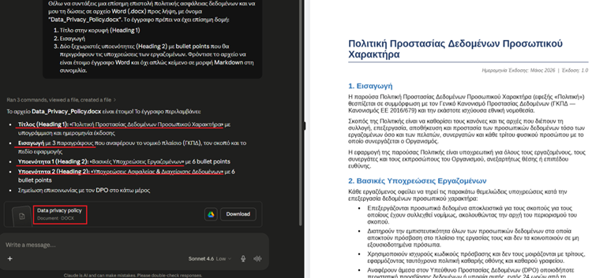
Microsoft Excel (.xlsx): Πρόκειται για την παραγωγή λειτουργικών υπολογιστικών φύλλων. Τα αρχεία που δημιουργεί το Claude περιλαμβάνουν πραγματικούς μαθηματικούς τύπους, πολλαπλά φύλλα εργασίας και μορφοποίηση υπό όρους, επιτρέποντάς σας να μεταβείτε από μια απλή συνομιλία σε ένα έτοιμο εργαλείο ανάλυσης.
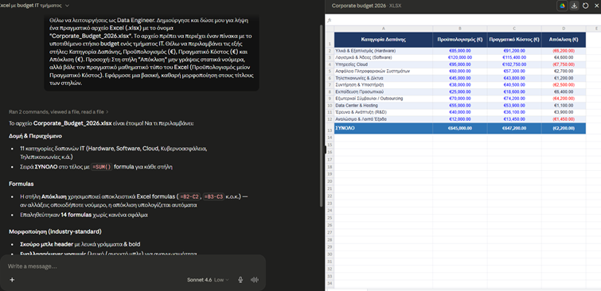
Microsoft PowerPoint (.pptx): Μπορείτε να ζητήσετε τη δημιουργία μιας πλήρους παρουσίασης. Το Claude οργανώνει το περιεχόμενο σε διαφάνειες, προσθέτει τίτλους, bullet points και, αν του ζητηθεί, σημειώσεις για τον ομιλητή στο κάτω μέρος κάθε διαφάνειας.
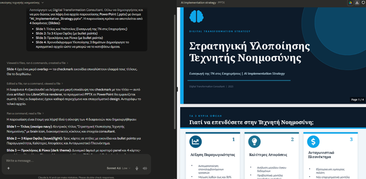
Αρχεία PDF: Ιδανικό για την παραγωγή τελικών αναφορών ή εγγράφων που προορίζονται για κοινοποίηση. Το PDF διασφαλίζει ότι η μορφοποίηση που δημιούργησε το Claude θα παραμείνει αναλλοίωτη σε οποιαδήποτε συσκευή.
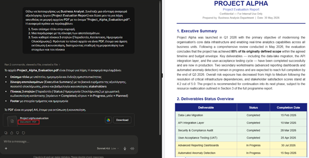
Πώς λειτουργεί η διαδικασία;
Για να δημιουργήσετε ένα αρχείο, η διαδικασία είναι απλή και άμεση:
- Ενεργοποίηση Βεβαιωθείτε ότι στις ρυθμίσεις (Settings > Capabilities) είναι ενεργοποιημένη η επιλογή «Code execution and file creation».
- Το Prompt Ζητήστε από το Claude αυτό που χρειάζεστε με σαφήνεια. Για παράδειγμα: «Με βάση την ανάλυση που κάναμε, δημιούργησε ένα αρχείο Excel με τα δεδομένα των πωλήσεων και ένα αρχείο PowerPoint 5 διαφανειών για την παρουσίασή τους».
- Λήψη Μόλις το Claude ολοκληρώσει τη δημιουργία, θα εμφανιστεί στη συνομιλία ένα εικονίδιο αρχείου με το όνομα του εγγράφου. Πατώντας πάνω του, το αρχείο κατεβαίνει απευθείας στον υπολογιστή σας.
Συμβουλή: Το όριο μεγέθους για τα αρχεία που δημιουργεί το Claude είναι τα 30MB. Αυτό είναι υπεραρκετό για τα περισσότερα έγγραφα κειμένου και παρουσιάσεις, αλλά αν έχετε εξαιρετικά μεγάλα σετ δεδομένων στο Excel, ίσως χρειαστεί να ζητήσετε την οργάνωσή τους σε περισσότερα από ένα αρχεία.
Δραστηριότητα: βάλτε τα βήματα στη σειρά
Τοποθετήστε στη σωστή σειρά τα βήματα δημιουργίας ενός αρχείου Office από το Claude (κάντε κλικ στα βήματα με τη σειρά που εκτελούνται):
Code Execution & File Creation για μη-προγραμματιστές
Μέχρι πρόσφατα, η προχωρημένη ανάλυση δεδομένων, ο καθαρισμός αρχείων και η δημιουργία σύνθετων γραφημάτων απαιτούσαν εξειδικευμένες γνώσεις προγραμματισμού (π.χ. σε γλώσσα Python) ή προχωρημένη χρήση εργαλείων Business Intelligence. Το Claude ανατρέπει αυτό το δεδομένο μέσω του ενσωματωμένου περιβάλλοντος εκτέλεσης κώδικα (Code Execution Sandbox).
Η λειτουργία αυτή επιτρέπει στο μοντέλο να γράφει αυτόματα κώδικα, να τον εκτελεί σε πραγματικό χρόνο και να σας παρουσιάζει απευθείας το τελικό αποτέλεσμα (πίνακες, υπολογισμούς ή διαγράμματα). Ως χρήστης, δεν χρειάζεται να δείτε, να γράψετε ή να κατανοήσετε ούτε μία γραμμή κώδικα. Η επικοινωνία σας με το μοντέλο γίνεται αποκλειστικά με απλές οδηγίες στα ελληνικά.
Ανεβάζοντας ένα αρχείο δεδομένων (όπως .xlsx ή .csv), μπορείτε να ζητήσετε τη διεξαγωγή εργασιών που παραδοσιακά απαιτούσαν ώρες χειροκίνητης εργασίας.
Καθαρισμός δεδομένων (Data Cleaning)
Το Claude μπορεί να εντοπίσει και να διορθώσει αυτόματα διπλότυπες εγγραφές, να συμπληρώσει ή να αφαιρέσει κενά πεδία, και να τυποποιήσει τη μορφή των δεδομένων (π.χ. μετατροπή όλων των ημερομηνιών στην ίδια μορφή).
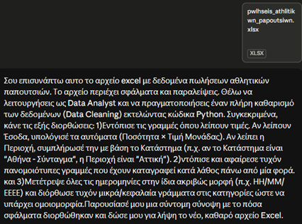
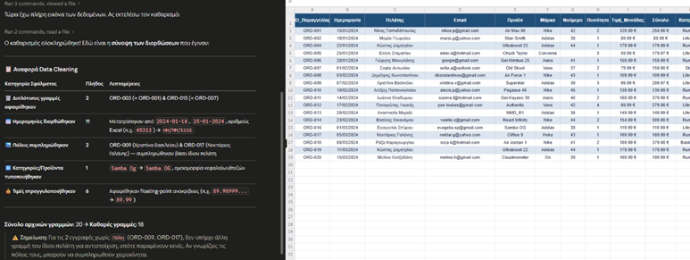
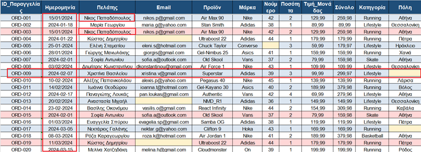
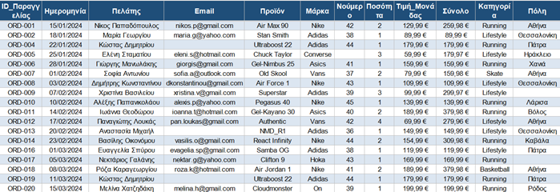
Σύνθετοι υπολογισμοί και στατιστικά
Αντί να ψάχνετε πολύπλοκες συναρτήσεις, μπορείτε να ζητήσετε από το μοντέλο να υπολογίσει μέσους όρους, ποσοστιαίες μεταβολές, τάσεις ή να ομαδοποιήσει τα δεδομένα ανά κατηγορία.
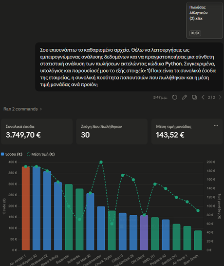
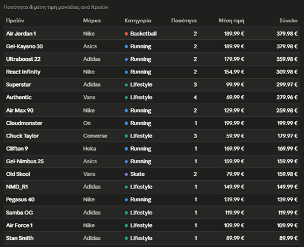
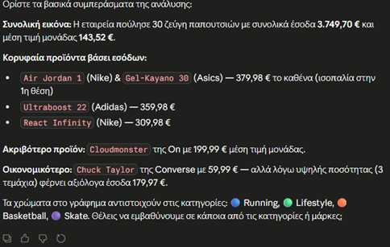
Αυτόματη παραγωγή γραφημάτων
Το μοντέλο μπορεί να μετατρέψει τις στήλες ενός πίνακα σε οπτική πληροφορία, δημιουργώντας ραβδογράμματα, κυκλικά διαγράμματα (πίτες) ή διαγράμματα γραμμής, τα οποία ενσωματώνονται απευθείας στη συνομιλία σας.
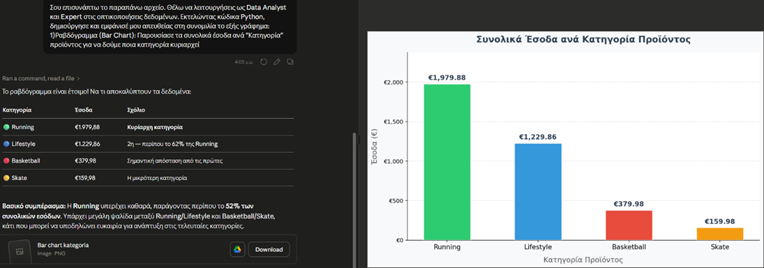
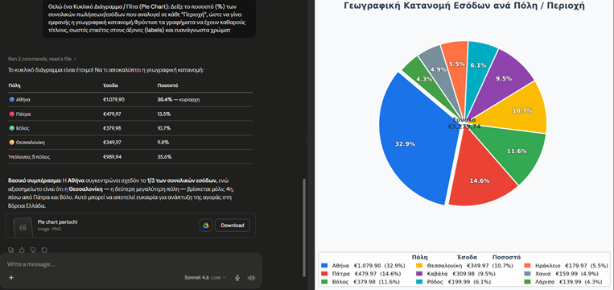
Γιατί είναι σημαντικό να γνωρίζετε πότε εκτελείται κώδικας;
Όταν ζητάτε από το Claude να επεξεργαστεί ένα αρχείο δεδομένων (π.χ. ένα Excel ή ένα CSV), θα παρατηρήσετε κατά τη διάρκεια της επεξεργασίας μια ένδειξη όπως «Ran Python code» ή «Analyzing».
Για έναν μη προγραμματιστή, η ένδειξη αυτή μπορεί αρχικά να φαίνεται ως μια δευτερεύουσα τεχνική λεπτομέρεια. Στην πραγματικότητα, όμως, αποτελεί μια από τις πιο κρίσιμες πληροφορίες που πρέπει να παρακολουθείτε, για δύο πολύ συγκεκριμένους, λειτουργικούς λόγους:
1. Εγγύηση μαθηματικής ακρίβειας (Υπολογισμός έναντι πρόβλεψης)
Τα Μεγάλα Γλωσσικά Μοντέλα (LLMs) στην απλή τους λειτουργία λειτουργούν με βάση τη στατιστική πρόβλεψη λέξεων. Αυτό σημαίνει ότι αν τους ζητήσετε να κάνουν σύνθετες μαθηματικές πράξεις ή να αθροίσουν εκατοντάδες γραμμές ενός Excel σε απλό κείμενο, υπάρχει σοβαρός κίνδυνος να κάνουν λάθος στην αριθμητική («παραίσθηση»).
Όταν όμως εμφανίζεται η ένδειξη «Ran Python code», το Claude μετατρέπεται από κειμενογράφο σε ηλεκτρονικό υπολογιστή. Γράφει ένα πραγματικό πρόγραμμα, το εκτελεί πάνω στο αρχείο σας και σας επιστρέφει το αποτέλεσμα. Η ένδειξη αυτή είναι η οπτική σας επιβεβαίωση ότι το μοντέλο υπολόγισε με απόλυτη μαθηματική ακρίβεια τα δεδομένα σας και δεν τα μάντεψε.
2. Έλεγχος της ροής εργασίας (Time Tracking)
Η επεξεργασία μεγάλων όγκων δεδομένων και η παραγωγή γραφημάτων απαιτούν χρόνο για να «τρέξουν» στο υπόβαθρο. Η εμφάνιση της ένδειξης λειτουργεί ως δείκτης προόδου (progress bar).
Σας ενημερώνει ότι το Claude εργάζεται ενεργά πάνω στο αρχείο σας και συνθέτει την απάντηση, αποτρέποντάς σας από το να θεωρήσετε ότι η εφαρμογή έχει κολλήσει ή ότι πρέπει να ανανεώσετε τη σελίδα χάνοντας τη συνομιλία σας.
Κανόνας εμπιστοσύνης: Πριν χρησιμοποιήσετε οποιοδήποτε στατιστικό στοιχείο, άθροισμα ή οικονομικό υπολογισμό που σας έδωσε το Claude για ένα αρχείο, βεβαιωθείτε ότι η απάντησή του συνοδεύεται από την ένδειξη εκτέλεσης κώδικα. Είναι η δικλείδα ασφαλείας σας για επαγγελματικά και έγκυρα αποτελέσματα. Πάντα ο τελικός έλεγχος πρέπει να γίνεται από εσάς τους χρήστες.
Γρήγορος έλεγχος
Τι σημαίνει η ένδειξη «Ran Python code» όταν το Claude επεξεργάζεται το Excel σας;
Πρακτικές εφαρμογές καθημερινότητας
Η πραγματική αξία ενός εργαλείου Τεχνητής Νοημοσύνης δεν κρίνεται από τις θεωρητικές του δυνατότητες, αλλά από τον τρόπο με τον οποίο ενσωματώνεται στην καθημερινή ροή εργασίας και βελτιώνει την παραγωγικότητα. Σε αυτή την υποενότητα, θα εξετάσουμε πέντε ρεαλιστικά σενάρια της καθημερινότητας, στα οποία το Claude μπορεί να αναλάβει τον ρόλο του άμεσου ψηφιακού σας συνεργάτη.
1. Email
2. Συνόψεις εγγράφων
3. Μεταφράσεις με ύφος
4. Brainstorming
5. Παρουσιάσεις
1. Επαγγελματική σύνταξη και διόρθωση email
Η επικοινωνία μέσω ηλεκτρονικού ταχυδρομείου απαιτεί συχνά χρόνο για να επιτευχθεί η σωστή ισορροπία μεταξύ ευγένειας, σαφήνειας και επαγγελματισμού, ειδικά όταν πρόκειται για ευαίσθητα ή επίσημα θέματα.
Μπορείτε να δώσετε στο Claude ένα πρόχειρο κείμενο με σκόρπιες σκέψεις και να του ζητήσετε να το μετατρέψει σε ένα δομημένο, επίσημο email.
«Θέλω να λειτουργήσεις ως Επαγγελματίας Κειμενογράφος. Μετάτρεψε τις παρακάτω σημειώσεις σε ένα επίσημο και ευγενικό email προς τη Διοίκηση, με το οποίο θα ζητάμε παράταση της προθεσμίας υποβολής του project κατά 3 ημέρες, επικαλούμενοι τεχνικές καθυστερήσεις στην αναβάθμιση του συστήματος. [Εισαγωγή σημειώσεων]»
Εναλλακτικό παράδειγμα: απάντηση σε παράπονο
Μια άλλη συχνή πρόκληση είναι η απάντηση σε ένα γραπτό παράπονο ή σε μια δυσαρέσκεια συνεργάτη. Σε τέτοιες περιπτώσεις, η συναισθηματική φόρτιση μπορεί να δυσκολέψει τη σύνταξη μιας αντικειμενικής απάντησης. Το Claude μπορεί να λειτουργήσει ως φίλτρο διπλωματίας.
Δίνετε στο μοντέλο το παράπονο που λάβατε και του ζητάτε να συνθέσει μια απάντηση που αναγνωρίζει το πρόβλημα, προτείνει λύση και διασφαλίζει τη διατήρηση της καλής συνεργασίας.
«Θέλω να λειτουργήσεις ως Έμπειρος Υπεύθυνος Δημοσίων Σχέσεων (PR Manager). Ένας σημαντικός πελάτης μάς έστειλε παράπονο γιατί καθυστέρησε η παράδοση της εβδομαδιαίας αναφοράς αποτελεσμάτων. Μετάτρεψε τις παρακάτω σκόρπιες σκέψεις μου σε μια επίσημη, καθησυχαστική και άκρως επαγγελματική απάντηση. Πρέπει να ζητάμε συγγνώμη για την αναστάτωση, να εξηγούμε σύντομα ότι οφειλόταν σε έκτακτο τεχνικό έλεγχο των διακομιστών και να τον ενημερώνουμε ότι η αναφορά έχει ήδη αποσταλεί. Σημειώσεις: [Εισάγετε τις σημειώσεις ή το αρχικό email του πελάτη]»
Γρήγορος έλεγχος
Λαμβάνετε γραπτό παράπονο από σημαντικό πελάτη για καθυστερημένη αναφορά. Ποιο prompt ακολουθεί την πρακτική της ενότητας;
2. Σύνοψη εκτενών εγγράφων και αναφορών
Η διαχείριση μεγάλου όγκου πληροφοριών (όπως πολυσέλιδες δημόσιες διακηρύξεις, νομικά κείμενα ή εταιρικές αναφορές) αποτελεί συχνά χρονοβόρα διαδικασία.
Ανεβάζοντας το έγγραφο (σε μορφή PDF ή Word), το Claude μπορεί να εξάγει τα κρίσιμα σημεία, τις προθεσμίες ή τα οικονομικά μεγέθη μέσα σε δευτερόλεπτα.
«Έχω ανεβάσει αυτή την αναφορά 40 σελίδων. Λειτούργησε ως Executive Assistant και δημιούργησε μια συνοπτική αναφορά (Executive Summary) σε bullet points, η οποία θα περιλαμβάνει: α) τον κύριο σκοπό του εγγράφου, β) τις 5 πιο σημαντικές διαπιστώσεις και γ) τυχόν κρίσιμες ημερομηνίες ή προθεσμίες που αναφέρονται.»
Εναλλακτικό παράδειγμα: πρακτικά σύσκεψης
Ένα ακόμη συχνό σενάριο είναι η ανάγκη επεξεργασίας πολυσέλιδων πρακτικών μιας μεγάλης σύσκεψης (Minutes of Meeting) ή αναλυτικών οδηγιών ενός έργου, όπου πρέπει να απομονωθούν άμεσα οι ευθύνες που αναλογούν σε κάθε εμπλεκόμενο.
Ανεβάζετε το έγγραφο και ζητάτε από το Claude να λειτουργήσει ως Project Manager, παρακάμπτοντας τις γενικές συζητήσεις και καταγράφοντας αποκλειστικά τις συγκεκριμένες εργασίες που ανατέθηκαν.
«Σου έχω επισυνάψει το αρχείο Word με τα αναλυτικά πρακτικά της μηνιαίας σύσκεψης του τμήματος. Λειτούργησε ως έμπειρος Project Manager και εξήγαγε από το κείμενο ένα ξεκάθαρο πλάνο ενεργειών (Action Plan). Θέλω να δημιουργήσεις έναν πίνακα με τις εξής 3 στήλες: 1) Συγκεκριμένη Εργασία / Παραδοτέο, 2) Όνομα Υπευθύνου (ποιος ανέλαβε τι) και 3) Προθεσμία Υλοποίησης. Αγνόησε τις γενικές τοποθετήσεις και εστίασε αυστηρά στις δεσμεύσεις που αναλήφθηκαν.»
3. Μετάφραση κειμένων με προσαρμογή ύφους
Η απλή, αυτοματοποιημένη μετάφραση λέξη προς λέξη συχνά αλλοιώνει το νόημα ή το απαιτούμενο ύφος ενός επαγγελματικού κειμένου.
Το Claude υπερέχει γιατί δεν μεταφράζει απλώς τη γλώσσα, αλλά μεταφέρει το πολιτισμικό και εταιρικό υπόβαθρο, προσαρμόζοντας το ύφος (π.χ. από ανεπίσημο σε αυστηρά ακαδημαϊκό ή νομικό).
«Μετάφρασε το ακόλουθο ελληνικό κείμενο στα αγγλικά. Το κείμενο απευθύνεται σε επενδυτές εξωτερικού, επομένως η μετάφραση πρέπει να διατηρεί ένα εξαιρετικά επαγγελματικό, πειστικό και σύγχρονο επιχειρηματικό ύφος (corporate tone), αποφεύγοντας τις κατά λέξη μεταφράσεις ιδιωματισμών.»
Εναλλακτικό παράδειγμα: τεχνικά κείμενα στα ελληνικά
Μια εξίσου σημαντική πρόκληση είναι η μετάφραση ξενόγλωσσων τεχνικών κειμένων, οδηγιών ή όρων χρήσης στα ελληνικά, με τρόπο που να μην ακούγεται «ρομποτικός» ή δυσνόητος για τον τελικό αποδέκτη.
Δίνετε στο Claude ένα αγγλικό κείμενο με πυκνή ορολογία (π.χ. από τον κλάδο της πληροφορικής ή του management) και του ζητάτε να το μεταφράσει στα ελληνικά, απλοποιώντας το ύφος ώστε να είναι άμεσα κατανοητό από μη εξειδικευμένους χρήστες.
«Θέλω να λειτουργήσεις ως Εξειδικευμένος Μεταφραστής και Τεχνικός Κειμενογράφος (Technical Copywriter). Μετάφρασε το ακόλουθο αγγλικό κείμενο, το οποίο περιγράφει τις τεχνικές προδιαγραφές ασφαλείας μιας εφαρμογής, στα ελληνικά. Προσοχή στο ύφος: Η μετάφραση δεν πρέπει να είναι κατά λέξη. Το τελικό κείμενο απευθύνεται στους απλούς χρήστες της εφαρμογής, επομένως το ύφος πρέπει να είναι φιλικό, επεξηγηματικό και απόλυτα κατανοητό (user-friendly tone), χωρίς όμως να χάνει την επαγγελματική του εγκυρότητα. Απόδωσε τους τεχνικούς όρους με δόκιμες ελληνικές εκφράσεις.»
4. Παραγωγή ιδεών και καταιγισμός ιδεών (Brainstorming)
Όταν καλείστε να σχεδιάσετε ένα νέο σεμινάριο, μια καμπάνια ή μια λύση σε ένα εσωτερικό πρόβλημα, η εύρεση της αρχικής ιδέας είναι συχνά το δυσκολότερο βήμα.
Το Claude λειτουργεί ως ένας συνεργάτης που δεν κουράζεται ποτέ, προσφέροντας εναλλακτικές οπτικές γωνίες και δομώντας τη σκέψη σας.
«Θέλω να σχεδιάσω ένα νέο εκπαιδευτικό πρόγραμμα 10 ωρών για ενήλικες με θέμα "Ψηφιακές Δεξιότητες στο Γραφείο". Λειτούργησε ως Σύμβουλος Εκπαίδευσης και πρότεινέ μου 3 διαφορετικές εναλλακτικές δομές (curriculum blueprints) με βάση τις σύγχρονες ανάγκες της αγοράς εργασίας.»
Εναλλακτικό παράδειγμα: λειτουργικά προβλήματα
Εκτός από τον σχεδιασμό προγραμμάτων, η μέθοδος του καταιγισμού ιδεών είναι απαραίτητη όταν ένας οργανισμός αντιμετωπίζει λειτουργικά προβλήματα ή εσωτερικές προκλήσεις και αναζητά άμεσες, πρακτικές λύσεις που δεν είναι προφανείς εξ αρχής.
Παρουσιάζετε το πρόβλημα στο Claude και του ζητάτε να εφαρμόσει μια συγκεκριμένη τεχνική brainstorming (όπως η μέθοδος Six Thinking Hats ή η ανάλυση αιτιών), ώστε να σας δώσει προτάσεις που καλύπτουν διαφορετικές οπτικές γωνίες.
«Στον οργανισμό μας αντιμετωπίζουμε σημαντική καθυστέρηση στην έγκριση εσωτερικών αιτημάτων και προμηθειών λόγω σύνθετης γραφειοκρατίας, γεγονός που προκαλεί εκνευρισμό στο προσωπικό. Λειτούργησε ως Σύμβουλος Επιχειρησιακής Οργάνωσης (Operations Consultant) και κάνε ένα δημιουργικό brainstorming. Πρότεινέ μου 5 καινοτόμες και άμεσα υλοποιήσιμες ιδέες για την απλοποίηση αυτής της διαδικασίας, χρησιμοποιώντας ψηφιακά εργαλεία αυτοματισμού. Για κάθε ιδέα κατέγραψε: α) τον τίτλο της, β) πώς λειτουργεί στην πράξη και γ) το αναμενόμενο όφελος για την αποδοτικότητα της ομάδας.»
5. Προετοιμασία και δομή παρουσιάσεων
Η δημιουργία μιας παρουσίασης απαιτεί διαφορετική αρχιτεκτονική από τη συγγραφή ενός κειμένου, καθώς η πληροφορία πρέπει να είναι σύντομη και οπτικά οργανωμένη.
Πριν ανοίξετε το PowerPoint, το Claude μπορεί να δημιουργήσει το πλήρες προσχέδιο (storyboard), ορίζοντας τι θα περιλαμβάνει κάθε διαφάνεια, τον τίτλο της και τις σημειώσεις που πρέπει να πείτε εσείς προφορικά.
«Με βάση την ανάλυση που κάναμε για την ψηφιακή ωριμότητα των οργανισμών, δημιούργησε τη δομή για μια παρουσίαση 6 διαφανειών. Για κάθε διαφάνεια, όρισε: 1) Τον Τίτλο, 2) Τα Core Bullet Points (έως 3) και 3) Τις Σημειώσεις Ομιλητή (Speaker Notes) που θα χρησιμοποιήσω κατά την παρουσίαση.»
Εναλλακτικό παράδειγμα: Business Pitch
Ένα ακόμη κρίσιμο σενάριο είναι η προετοιμασία μιας παρουσίασης για την έγκριση ενός νέου έργου ή τον απολογισμό μιας επιχειρηματικής πρωτοβουλίας (Business Pitch). Σε αυτές τις περιπτώσεις, η δομή πρέπει να ακολουθεί μια λογική αλληλουχία: πρόβλημα, λύση, κόστος και προσδοκώμενο όφελος.
Ζητάτε από το Claude να λειτουργήσει ως Business Developer και να οργανώσει τις πληροφορίες ενός νέου έργου σε ένα «σφιχτό» storyboard παρουσίασης, εστιάζοντας στην πειστικότητα των επιχειρημάτων.
«Θέλουμε να παρουσιάσουμε στη Γενική Διεύθυνση μια πρόταση για την προμήθεια ενός νέου λογισμικού Διαχείρισης Πελατών (CRM) με σκοπό την έγκριση του budget. Λειτούργησε ως έμπειρος Business Developer και δημιούργησε τη δομή (storyboard) για μια σύντομη και δυναμική παρουσίαση 5 διαφανειών. Για κάθε διαφάνεια όρισε: 1) Τον ακριβή Τίτλο. 2) Τα κύρια οπτικά στοιχεία ή Bullet Points (έως 3, με έμφαση σε αριθμούς και οφέλη). 3) Τις Σημειώσεις Ομιλητή (Speaker Notes) με τα επιχειρήματα που πρέπει να αναφέρω προφορικά για να πείσω τους συμμετέχοντες. Η ροή πρέπει να ακολουθεί τη δομή: Διαφάνεια 1: Εισαγωγή, Διαφάνεια 2: Το Πρόβλημα (υφιστάμενη κατάσταση), Διαφάνεια 3: Η Λύση (το CRM), Διαφάνεια 4: Οικονομικό Όφελος & ROI, Διαφάνεια 5: Επόμενα Βήματα (Next Steps).»
Δραστηριότητα: αντιστοίχιση
Αντιστοιχίστε κάθε σενάριο καθημερινότητας με τον ρόλο που αναθέτουμε στο Claude σύμφωνα με τα παραδείγματα της υποενότητας:
Ανακεφαλαίωση Ενότητας 2 (μέρος 1)
- Τα Artifacts είναι αυτόνομο περιεχόμενο σε ξεχωριστό παράθυρο δίπλα στο chat (κώδικας/εφαρμογές, έγγραφα, οπτικά στοιχεία SVG/διαγράμματα). Εμφανίζονται όταν το περιεχόμενο είναι αυτόνομο, ογκώδες (π.χ. >20 γραμμές κώδικα ή 1.500 χαρακτήρες) και πιθανό παραδοτέο προς αποθήκευση.
- Επεξεργασία Artifact με δύο τρόπους: μέσω του Claude (οδηγίες σε απλή γλώσσα, με διατήρηση ιστορικού αλλαγών) ή χειροκίνητα (docx: λήψη τοπικά ή Google Drive· κώδικας: προβολή UI/κώδικα, επιλογές explain/improve, αντιγραφή/λήψη) — και κοινοποίηση με Publish.
- Εργασία με αρχεία: PDF (σύνοψη, στοχευμένο Q&A, μετάφραση με ορολογία, εξαγωγή δομημένων δεδομένων), Word (ύφος/μορφοποίηση, proofreading, αναδιάρθρωση, εμπλουτισμός), Excel/CSV (στατιστική ανάλυση, KPIs, reporting), εικόνες (OCR, ανάγνωση διαγραμμάτων, αξιολόγηση UI/UX, κώδικας από mockup) και σύγκριση πολλαπλών αρχείων (version control, σύγκριση δεδομένων, cross-referencing — με συγκριτικούς πίνακες).
- Web Search για γρήγορα, άμεσα γεγονότα και ειδήσεις με παραπομπές· Research Mode για σύνθετα θέματα, με πολλαπλούς κύκλους (υπο)αναζητήσεων, διασταύρωση πηγών και εκτενή αναφορά με παραπομπές.
Ανακεφαλαίωση Ενότητας 2 (μέρος 2)
- Κριτική αξιολόγηση αποτελεσμάτων: έλεγχος αξιοπιστίας domain, διασταύρωση ημερομηνιών, εντοπισμός αποκλίσεων (hallucinations), αναγνώριση μεροληψίας (bias). Το Claude κάνει το 90% της προεργασίας — το κρίσιμο 10% της επαλήθευσης είναι δικό σας.
- Δημιουργία εγγράφων Office: Word, Excel (με πραγματικούς τύπους), PowerPoint (με speaker notes), PDF. Διαδικασία: ενεργοποίηση «Code execution and file creation» → σαφές prompt → λήψη από το εικονίδιο αρχείου. Όριο μεγέθους: 30MB.
- Code Execution Sandbox για μη προγραμματιστές: καθαρισμός δεδομένων, σύνθετοι υπολογισμοί/στατιστικά, αυτόματα γραφήματα. Η ένδειξη «Ran Python code» = εγγύηση μαθηματικής ακρίβειας (υπολογισμός, όχι πρόβλεψη) και δείκτης προόδου.
- Πέντε πρακτικές εφαρμογές: επαγγελματικά email, συνόψεις εκτενών εγγράφων, μεταφράσεις με προσαρμογή ύφους, brainstorming και δομή παρουσιάσεων — πάντα με σαφή ρόλο, πλαίσιο και ζητούμενη μορφή.
Συγχαρητήρια! Ολοκληρώσατε την Ενότητα 2. Μπορείτε να επιστρέψετε σε οποιαδήποτε διαφάνεια από το μενού περιεχομένων για επανάληψη.